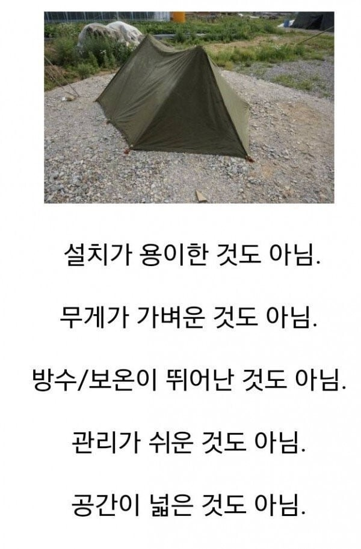

3명이서 잔 게 레전드

3명이서 잔 게 레전드
자다깨서 군화신으면 돌덩이라 발도 존나 안 들어감 ㅋㅋㅋㅋㅋ
텐트쳐보고 자본적이 없네..
훈련소에서 저거 치고 자지 않나?
저거 안 쳐봤다는 사람이 꽤 많네?
사실상 전방이나 전방 예비부대들 대체된지 이제 10년 넘었음 너나 나나 늙은거임
신형은 3명이서 잘만함 추운건 똑같아서 핫팩 터트리고 자야하는건 매한가지지만
저거 치고 자는 훈련 할려다가 폭설 땜에 취소됐었음 ㅋㅋ
겨울에 저거 치고 자면 아침에 물이 응결되서 존나 달라붙어있음 내부에
물 존나 흥건하고 똑똑 떨어져서 자동 기상됨
셋이서 자서 불편하다 그런 마인드도 안듬 걍 존나 추워서 누군가 옆에서 온기를 준다는거에 감사했음
뭐 내구도 높은거랑.. 저거 불에 잘 안타지않아?
신병훈련소에서 썼는데 3명 들어가서 자랬는데 숨을 못 쉬겠더라
텐트를 보니 혹한기때 첫 날 전투화 대충 구석에 쳐박고 잤다가 다음날 아침에 일어나보니 얼어 있어서 개고생 하고 그날 저녁부터는 끌어안고 잤던 ㅈ같은 기억이 남 ㅅㅂ
우린 전투화 밖에 빼놓고 잤는데.. 불침번 서러 새벽에 나갈때 지옥이었음. 발바닥 핫팩 없인 불가능
바닥한기 그대로 올라오니 방수비닐에 박스 깔고, 저 좁은데에 총넣고 침낭넣고 자고 에휴,
불침번하고 나서 다시 저 좁은데 들어가서 자야하니까 한숨나오더라.
저런거 안써봐서 모름.... 포병 출신
포병은 훈련나가서 숙영을 안함? D형텐트라도칠텐데
하지, 저런 작은거 안쓰고 큰거 썼음. 분대형?
난 179때는 야외 안나가보고 k9일때는 k77안에서 잠… ㄹㅇ 냉동고에서 자는 기분임
분대형 텐트 용마루 큰거 세우는거 씀 이게 그걸껄 일베인가 디시인가 레벨6인지가 혼자 칠수 있다한 텐트
솔까 쿠팡 원터치 2만원짜리 텐트가 더 넓고 따뜻하고 설치 해체 쉽고 나을듯
저것도 군납가로 몇십만원할꺼임
30얼마했었던걸로 기억함 ㅋㅋㅋㅋ 같은가격이면 프랑스제고급텐트 산다
프랑스 고급 제품 추천 좀
나름 포근하던데 ㅋㅋ
지금도 써?
16군번인데 신형텐트? 나름 공원에 깔려있을법한 비쥬얼이였음 ㅋㅋ
유도리라는게 ㅈ도 없는게 그냥 원터치가 낫지않나 생각을 100번했네
의무병이라 중대원 텐트 10개 쳐주고 의무실텐트 ㅈㄴ큰거 치고 주임원사랑 나무떼서밥하고 기름보일러에 라면끓여먹고 AMB로 여간부 실어주고 군의관이랑 맥주까먹다 내텐트가서 핫팩10개까서 따숩게 잤음
16 군번 인데 나는 신형 텐트 줬음 난 저거 훈련소 가서 딱 한번 봤는데
매트리스 1만원짜리 발포매트 하나만 써도 바닥한기차단하는데 ㅅㅂ
A형보다 D형은 넓다고 좋다 했는데 시발 한 개 분대를 쳐 우겨 넣을 줄 몰랐지..
불침번도 시키는데 누가 어디서 자는지 모르니 가챠고
나저거 아예 본적이없어서 그런데
접으면 부피가 작다거나 그런것도 아님??
뭐 군장에 달고 다닐때 느낀게 무겁긴해도 부피는 그렇게 크지 않았음 ...
요즘 신형텐트랑 비교한다면 부피 무게 둘다 못이겠지만 ...
어우 그렇구나..딱봐도 쌩철로 만든 파이프마디 몇개랑 개 질긴 군용천 정도니까 무진장 무겁긴 하겠구나..
논산에서 딱 한번 사용해봄 .... 그런데 지금은 어떻게 사용하는지도 까먹음 ... ㅋㅋ
15군번인데 신형 텐트 폴대 , 천 나눠서 팔뚝만하고 가벼움 저건 훈련소에서나 봤음
텐트 요즘 헐값이라는데 싹다 바꿈안대나
훈련소때 저거치고 숙영하는데 동기 머리만 달랑 나온채로 자고있더라 ㅋㅋㅋㅋㅋ 불쌍해서 나뭇가지로 덮어줌 ㅋㅋㅋ
저건 양반임 소형발전기가 개지랄임
27사 수색대 신형군장 쓰는애들은 텐트도 원터치였던걸로 기억
내구성 > 불편
인듯..
튼튼 할 뿐임
세명이서 어케잤지 진짜ㅋㅋ ㅅㅂ
침낭 안에 핫팩 10개 터뜨려서 그와중에 포근했던 거 생각나네
자대에서 분대형 텐트만 써보고 저건 신교대때 눈으로 보기만함 그때 비가 너무 많이와서 숙영 취소로 군생활하면서 본적이 없음
서바이벌에 가까운 캠핑을 하는 서양 유튜버들 중에 일부러 저런 옛날 군용 텐트나 판초에 접이식 난로 싸짊어지고 다니면서 폭우가 내리거나 폭설이내리거나 둥중 하나인 산에서 텐트치고 나무찾아 불피우고 안에서 밥해먹고 자는게 컨텐츠인 사람들이 좀 있긴 하더리.
내구도가 씨발 좆되게 튼튼함
12월 영하 10도 넘어가는 날씨에 산 올라가서 A형 텐트 치고 잤음..
훈련소에서만 써봄
성능 괜찮은 침낭에 핫팩 몇개 깔면 잘만함
훈련소 야외숙영훈련에서만 써본 줄 알았는데
사회초년생일때 동원가서도 써본 기억이 남
나는 그 기둥 6개 이상 박는 텐트가 좋더라
짱짱하게 당겨서 울지 않게 피면 기분 좋음
18군번 훈련소때 한번 써보고 자대에선 24인용만 씀
저거 그 포탄으로 인해서 불났을때 텐트들에 불 안 옮기는 용도라고 알고있었는데
A형에 3명이 왜자?
추운데 잠은 안 오고
셋이서 입 돌아갈까 걱정하면서 노가리까다 헤어짐